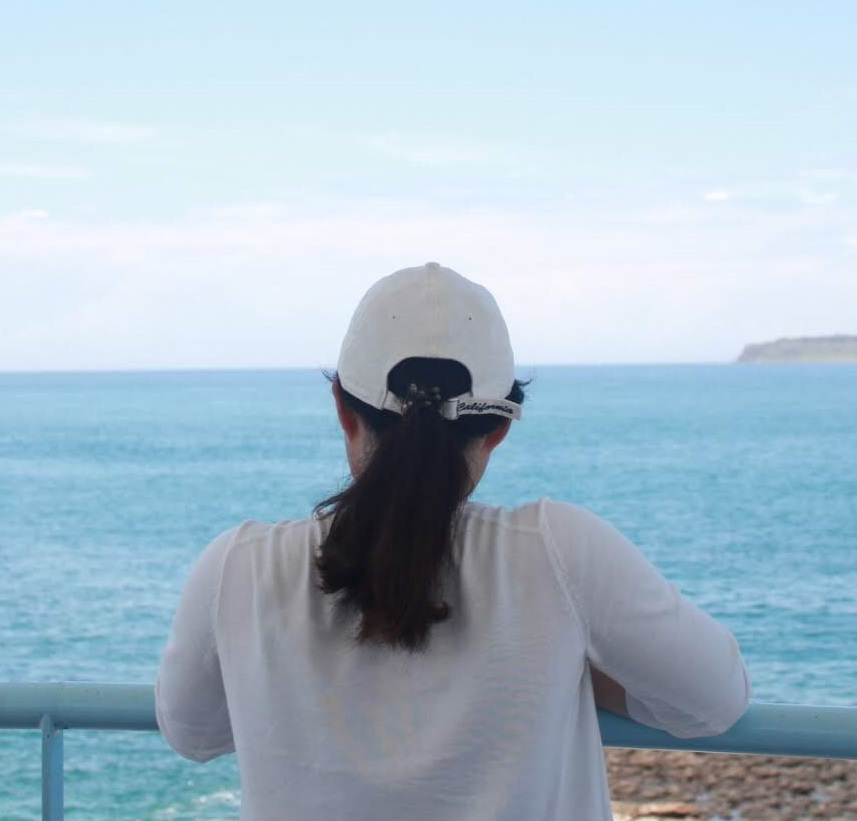

ABOUT ME
- 池田 さくら
- 1996年03月19日生まれ
- 最終学歴：商業高校 商業科卒業
- ﾜｰｷﾝｸﾞﾎﾘﾃﾞｰにて
台湾に10ヶ月間滞在歴アリ
Career
2014.06~2018.09
歯科医院にて歯科助手として従事
歯科助手として患者様が治療前でも安心できるようなお声掛けや、医師がスムーズに治療できるよう、常に次のステップを考えることを常に意識していました。
2019.11~2020.03
無人施設運営業に従事
施設開業準備や、日々の運営、チェックイン業務など多様な業務に携わりました。「また来たい国、日本」を主なテーマに、日本人ならではの細やかな配慮を心掛けていました。
About Myself